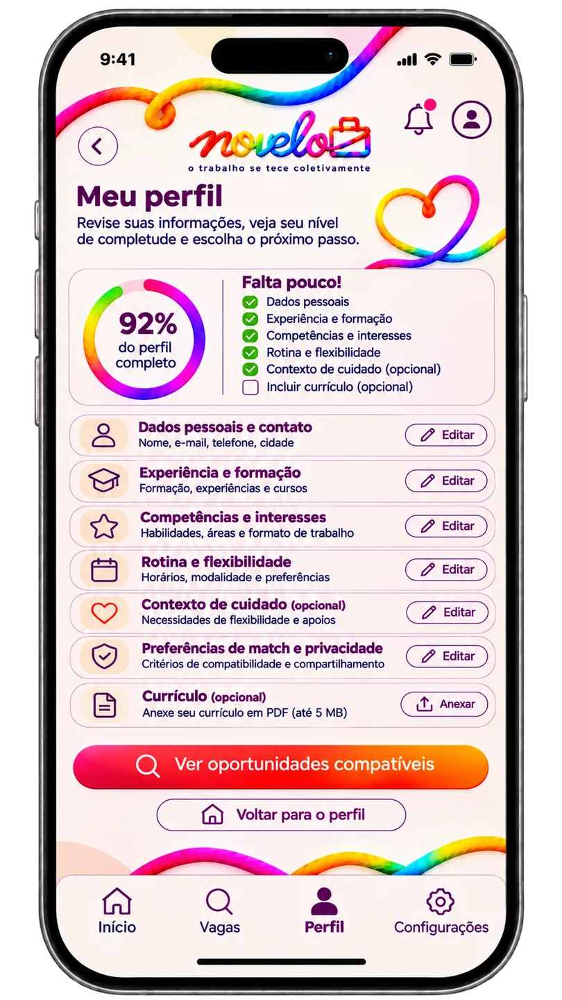
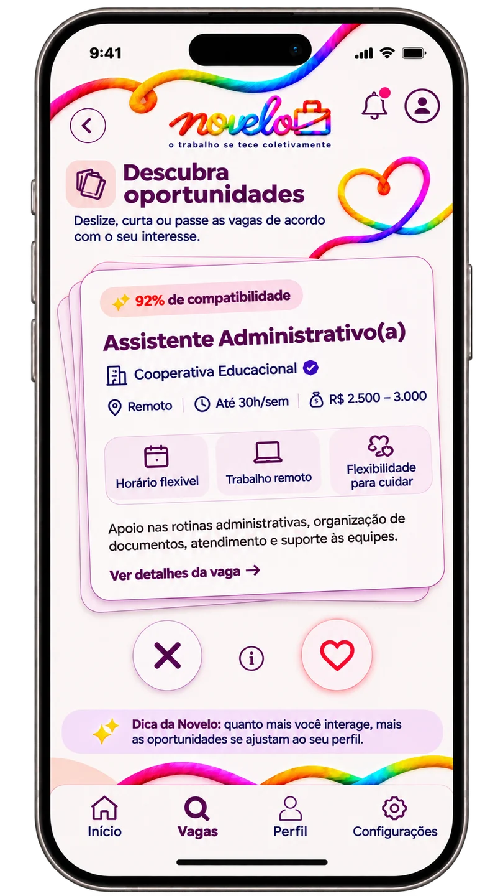
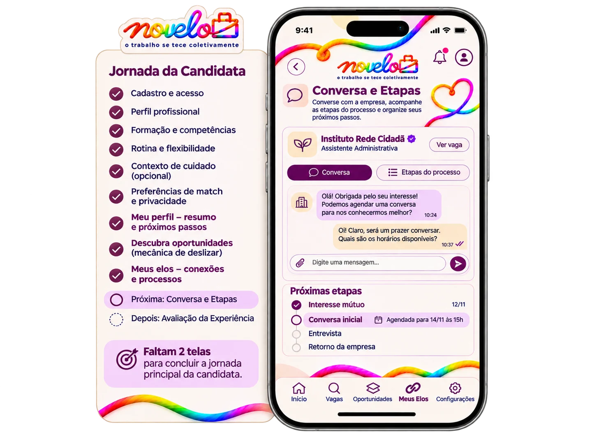

Trama da Vida
O espaço privado da candidata para configurar horários, modalidade, deslocamento, acessibilidade, benefícios desejados e contexto de cuidado opcional.
O que faz sentido para mimA Novelo aproxima pessoas e empresas a partir das competências, das escolhas e das condições reais de cada oportunidade. Porque encontrar trabalho não deveria exigir abrir mão do cuidado.

Uma pessoa pode ter experiência e todas as qualificações para trabalhar, mas encontrar barreiras nos horários, no deslocamento ou nas responsabilidades de cuidado.
A Novelo foi pensada para que essas condições participem da escolha, sem exigir que a pessoa exponha sua vida particular para justificar preferências.
Um novelo reúne um único fio enrolado. Quando esse fio está organizado, pode seguir diferentes caminhos, conectar pessoas e dar forma a novas histórias.
O nome Novelo também contém um novo elo: a possibilidade de construir relações profissionais mais transparentes, recíprocas e sustentáveis.
Cada pessoa organiza suas preferências. Cada empresa apresenta as condições que oferece. A Novelo identifica onde elas podem se encontrar.
O espaço privado da candidata para configurar horários, modalidade, deslocamento, acessibilidade, benefícios desejados e contexto de cuidado opcional.
O que faz sentido para mimO espaço da empresa para tornar claras as condições de cada vaga: jornada, acessibilidade, benefícios, assistências e compromissos de trabalho.
O que a vaga ofereceO sistema compara requisitos profissionais e condições de vida. A conexão só se concretiza quando existe interesse mútuo.
O encontro dos dois ladosPerfis privados, oportunidades claras e conexões construídas com consentimento. Os mockups ilustram a experiência planejada da plataforma.
Área profissional, formação, competências, experiência, localização, pretensão salarial e currículo, tudo organizado em um perfil que pode ser atualizado quando sua vida mudar.


As vagas aparecem em cartões com requisitos e condições objetivas, como modalidade, remuneração, horário, acessibilidade e apoios oferecidos.
Com a conexão autorizada, a pessoa acompanha seus processos, conversa com a empresa, organiza entrevistas e recebe atualizações sobre as próximas etapas.

Apresentação em áudio de até 30 segundos, facultativa e sob autorização.
Foto ou avatar personalizado, sem obrigação de expor a imagem pessoal.
Interrupção temporária das correspondências, sem perder o perfil.
Teste comportamental opcional, sem uso eliminatório automático.
No Novelo da Vida Real, a empresa informa o que existe de verdade em cada oportunidade. Assim, a candidata pode compreender suas condições antes do contato.
Os badges da Novelo valorizam compromissos verificáveis das empresas, sem ranking ou corrida por pontos. Cada reconhecimento representa um passo na construção coletiva de melhores condições de trabalho.
A Novelo incorpora os princípios da Lei Geral de Proteção de Dados Pessoais desde a concepção do aplicativo.
A Novelo dialoga com a Política Nacional de Cuidados, instituída pela Lei nº 15.069/2024, e com a compatibilização entre trabalho remunerado e responsabilidades de cuidado prevista no Plano Nacional de Cuidados.
Seu propósito não é substituir serviços públicos ou obrigações trabalhistas, mas oferecer ferramentas para tornar oportunidades e compromissos mais claros, incluindo o retorno e a permanência no emprego.
Construir melhores oportunidades exige escuta, acessibilidade, compromisso e colaboração.
O trabalho se tece coletivamente.